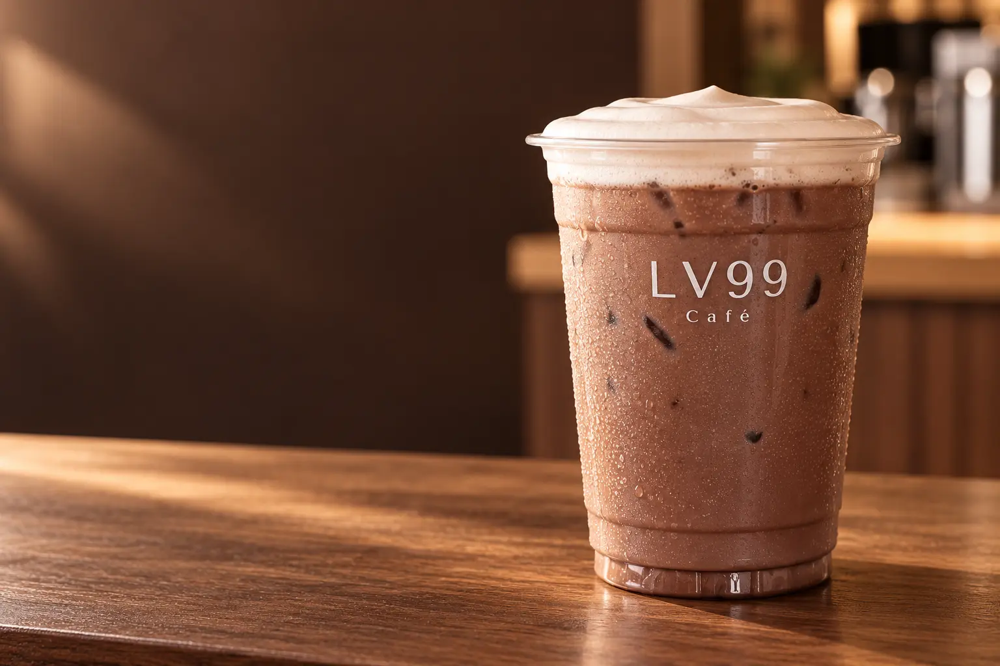

A clear, full cocoa character

LV99 signature cocoa
Iced cocoaRich · smooth
Full-flavored iced cocoa finished with soft milk foam — a refreshing way to step out of the Bangkok heat and take a pause on Charoen Krung.
75THB · Iced
Try it at the shop ↗The drink
Rich cocoa,
soft milk foam
The appeal of iced cocoa lies in its mellow bitterness and aroma. Milk and ice make it easy to enjoy while preserving a clear cocoa character.
At LV99coffee, we top it with soft milk foam for a smooth first sip, followed by rich cocoa and ice made in-house from filtered water.
A soft foam layer on top
Made in-house from filtered water
Cocoa, honestly
Benefits and useful
cocoa facts
We separate what is interesting about cocoa from claims that go beyond the evidence.
Naturally contains flavanols
Cocoa beans contain flavanols. EFSA has assessed a relationship between a specified daily amount of cocoa flavanols and normal blood flow, but flavanol levels vary with the cocoa and processing. It should not be assumed that every cocoa drink provides the same amount or effect.
A comforting pause
The aroma, cool temperature and smooth texture can make a break feel enjoyable. That personal sense of comfort is not a medical treatment or health guarantee.
Energy from the recipe
Iced cocoa made with milk and sweetness provides energy like other milk-based drinks. Anyone managing sugar or energy intake should enjoy it in an amount that suits their needs.
Natural stimulants
Cocoa naturally contains caffeine and theobromine. Although usually less caffeine than coffee, individual sensitivity varies, especially later in the day.
A common question
Can cocoa help yousleep better?
The short answer: we should not make that promise.
Sitting down with cocoa may feel comforting, but there is not enough reason to claim that iced cocoa treats insomnia or helps everyone sleep. Caffeine in cocoa may also disturb sleep for people who are sensitive to stimulants.
If you are caffeine-sensitive, have sleep difficulties or manage a specific health condition, avoid drinking it close to bedtime and seek professional advice when appropriate.
Taste it yourself
Take a break with an LV99 iced cocoa
Find us at the entrance of Soi Charoen Krung 9, around 140 metres from MRT Sam Yot. Open Monday–Saturday, 07:30–16:30.